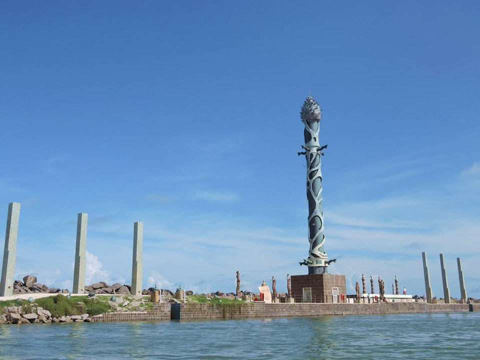

A praça tem o nome original de Praça Barão do Rio Branco, porém é mais conhecida como Praça
do Marco Zero pelo fato de que nela encontra-se o quilometro zero das estradas de Pernambuco.
É formada por um marco de cor vermelha feito pelo artista plástico pernambucano Cícero Dias, no chão é
possível ver a Rosa dos Ventos e sua frase “Eu vi o mundo… Ele começava no Recife”.
O Marco Zero de
Recife é um dos pontos turisticos mais belos do Brasil,
e tem sua marca até no ranking mundial... Duvida?! Então continua aqui pra entender.
Em volta da praça você também encontra vários lugares que vale a pena conhecer, confira alguns deles:
Parque das Esculturas Francisco Brennand
O Parque das Esculturas Francisco Brennand é um museu de arte a céu aberto. Constitui um dos principais
feitos do artista plástico pernambucano Francisco Brennand
inaugurado em 2000, onde está exposto um conjunto de peças de cerâmica produzidas por Francisco Brennand, em destaque a
Coluna de Cristal que possui 32 metros de altura.

Parque das Esculturas Francisco Brennand
Centro de Artesanato de Pernambuco
O o Centro de Artesanato de Pernambuco tem como foco a arte popular e o artesanato tradicional. Ele fica no antigo Armazém 11,
além de poder adquirir várias peças de grandes artesãos e artistas reconhecidos de todo o estado, há galeria para exposição,
auditório e espaço gastronômico com uma vista para o rio Capibaribe.
Centro de Artesanado de Pernambuco
Além desses citados acima, existem diversos outros pontos históricos no Recife Antigo, acesse a Página 2 para confeir